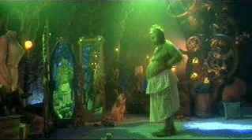

| How
the Grinch Stole Christmas (SE)/C,B |
| Universal/2000/105/ANA
1.85 |
How the Grinch Stole Christmas didn't do it for me. He neither
pierced my heart with fear nor
disgusted me to the extent of provoking laughter. In fact, this old Grinch probably worked best
as a sleeping tonic. At least my thirteen-year-old daughter was delighted by
varied Grinch antics.
No doubt the busy production design is supposed to be a hoot. Some of it is
funny, but I grew tired of it quickly. I felt rather overpowered by the
machinations.
 |
| Looking good, Grinch. ©Universal |
Jim Carrey is buried beneath Grinch make-up.
Excessive make-up coupled with special effects worked wonders for Carrey in The Mask.
In that film, there was a balance between a live Carrey and a juiced up Carrey. Can
you imagine Jim Carrey going trick or treating? That might give you an inkling into
his Grinch
performance. I suppose I wanted Carrey to be funnier too. Young Taylor
Momsen is a bland Cindy Lou Who, but that is part and parcel of the overall
conception.
I can understand how director Ron Howard might have gotten
carried away by the material. Dr. Seuss's Grinch is a sort of public treasure.
Howard's usual good judgment may have been dazzled by the task of decorating a
venerable public Christmas tree with movie delights. Excess is the operative
word in most instances. How the Grinch Stole Christmas is really for a
young kid audience. It's tuned safely for young impressionables.
Is the How the Grinch Stole ChristmasDVD
faithful to the original source material? Probably. Most sequences are sharp,
however in a number of instances it almost appears the film has been
airbrushed, like illustrations in a fairy tale book. It's not in synch with
the nature of the narrative material nor production elements. I found black
level occasionally less than optimal. Is it a fair approximation of the
original source material? Color is good with a subtle range, though in scenes
with compromised black level, the color is slightly washed out. My guess is
that How the Grinch Stole Christmas would present a major challenge for
fixed pixel display devices like LCD and DLP projectors, and plasmas. There's
a choice of Dolby Digital or DTS sound, both which present a wide and detailed
surround experience.
The special edition elements are standard fare. They do
enhance the experience for fans of the film. Emphasis is strong on make-up and
production design elements, perhaps an indicator of what the mindset was for
this feature. In addition to a "spotlight on Location" featurette,
there are deleted scenes, a few minutes of Carrey out-takes, and other
snippets of Grinch arcania.
|
|
|
|

Selections from the Feature Archive include articles on
Akira Kurosawa, Blonde Bimbos,
Frank
Darabont, Steven Culp,
John
Herzfeld or Vietnam: The
Hollywood Pariah, and many more....
The Bitch Brigade

A line-up of lean-lipped
actresses who marched through Hollywood in a high heeled goose step armed with razor sharp
dialogue. Click on the image to read all about them.

October Sky/A,A

Johnston’s glorious montage work accompanied by Marc Isham's stunning Americana score are reason
enough for watching this exquisite movie.


Glenn Erickson's insightful DVD reviews have been a Internet fixture for several
years. Check out some of his sophisticated feature articles. Currently hosted by
DVD Talk.

Agoraquest is
offering reviews, forums, news, and more dedicated to Sony products including,
televisions, cameras, audio, DVD, and more.

The
Movie Poster Archive include extensive poster images from the films of stars like Susan Hayward,
Kirk Douglas, Katharine Hepburn and many more. Our featured star is Clark Gable.
|